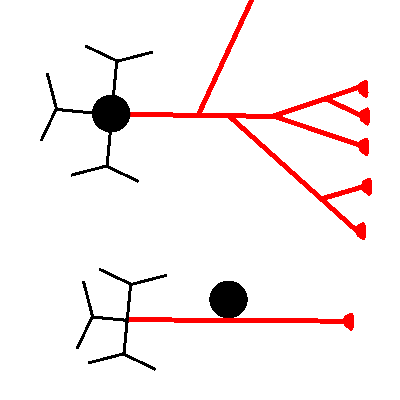

Soma; Dendriten; Axon
Oben: Interneuron mit verzweigtem Axon;
Es folgen ein oder mehrere weitere Interneurone oder efferente Neurone (nicht dargestellt).
Unten: Afferentes sensorisches Neuron mit Soma und Dendriten jeweils direkt am Axon;
Es folgt ein Interneuron (nicht dargestellt).